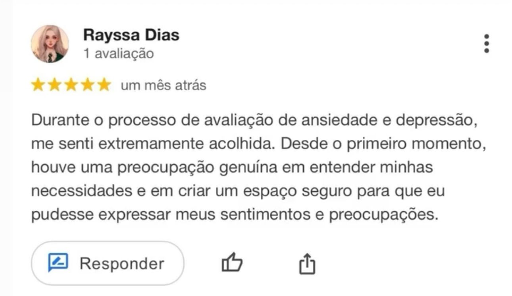
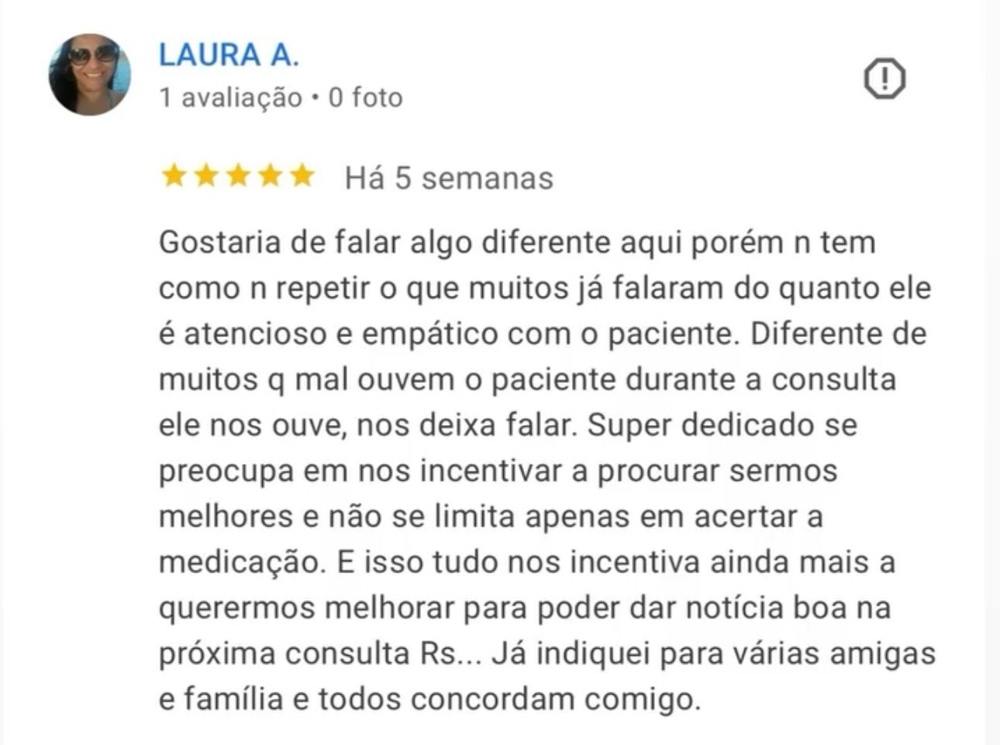

Quem é o Dr. Tejada?
Médico com atuação em saúde física e mental, com experiência no manejo de condições como ansiedade, depressão, insônia, alterações do humor e doenças clínicas em geral. Com uma abordagem prática e orientada para a realidade clínica, Dr. Tejada tem como missão transformar quadros complexos em condutas claras, seguras e aplicáveis no dia a dia, com padrão elevado de excelência. Atua como preceptor de internos de Medicina — estudantes em fase final da graduação médica — pela Universidade Municipal de São Caetano do Sul (2026), com atuação no Hospital Municipal de Diadema, participando diretamente da formação de médicos que estarão na linha de frente da assistência. Com uma didática objetiva e voltada à prática, conduz o ensino com foco em raciocínio clínico, tomada de decisão segura e autonomia em cenários críticos, formando profissionais mais preparados para a realidade da assistência. Atualmente é médico concursado no município de Carapicuíba-SP, com atuação também na atenção básica em unidades de saúde na cidade de São Paulo, incluindo a UBS São Pedro e a UBS Parada XV de Novembro, exercendo atendimento direto à população em contextos de alta demanda e sofrimento psíquico. Além da assistência, dedica-se à produção de conteúdos que facilitam a compreensão dos processos mentais e promovem maior autonomia tanto para pacientes quanto para profissionais da saúde. Seu trabalho une ciência, experiência clínica e comunicação acessível, com foco em resultados concretos e aplicáveis. Se você busca clareza, segurança e uma abordagem direta, baseada em prática real e alto nível de execução, Dr. Tejada oferece um caminho estruturado em conhecimento, estratégia e transformação.
- Médico CRM-SP 251887

